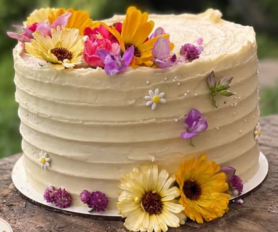
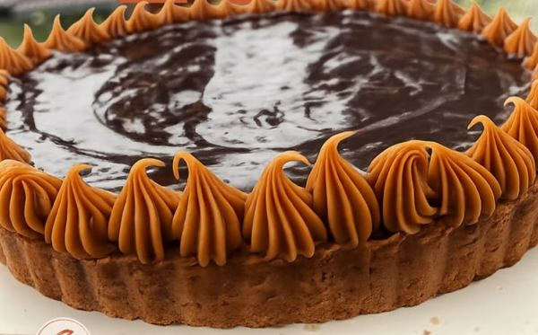
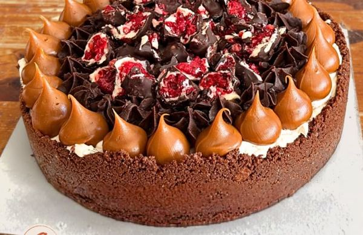
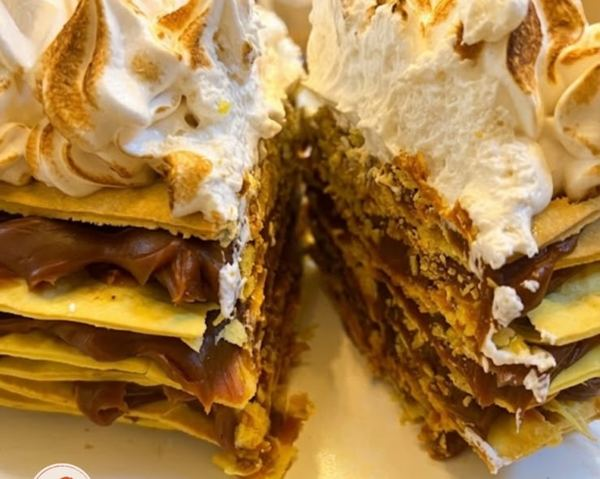
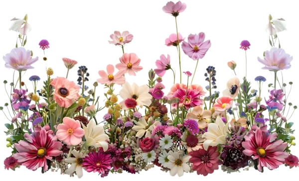
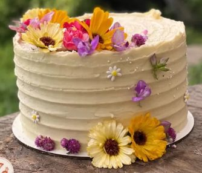
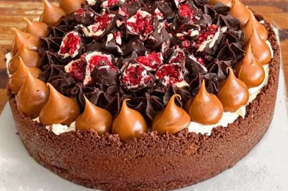
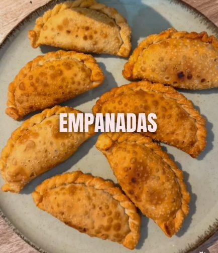
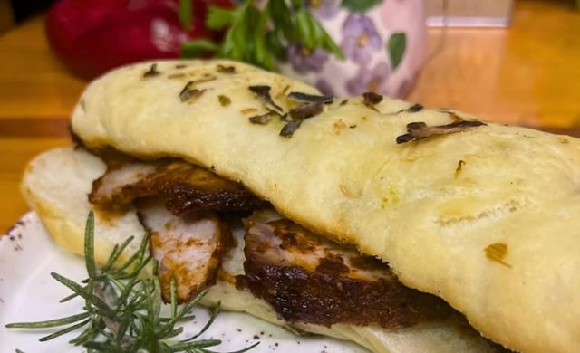

Tortas, tartas y comidas caseras como las de la abuela, en un patio tranquilo, con el sonido de los pájaros y la tarde del campo.
Ver la cartaCómo llegarEn Contigo se cocina todo en casa, con recetas de una familia de pasteleros. Nada sale de una caja.
Ella cocina, él te atiende. Venís a tomar algo y te sentís acompañado, como dice nuestro nombre.
A una cuadra de la antigua estación de tren, que volvió a funcionar. Ideal para una escapada rural.

Con flores de verdad, dulce de leche, frutos rojos y mucha paciencia. Podés llevarte una completa o pedir tu porción en la mesa.
Pedir una torta


Opiniones de quienes ya nos visitaron, en Google Maps.
Contanos tu experiencia en Google Maps: ayuda a que más gente conozca Contigo.
Recibimos grupos de cicloturismo. Escribinos por Instagram con unos días de anticipación y te preparamos la mesa.
Escribinos
Nunca fueron solo tortas: cada pedido llega con una historia por celebrar.


Cumpleaños, aniversarios, casamientos. Con flores, buttercream, frutos rojos o dulce de leche, como la imagines.
Mesas dulces y saladas para cumpleaños y casamientos, todo de elaboración casera.
Empanadas, sándwiches y minutas caseras para que tu festejo tenga sabor a casa.


Pedí con anticipación por Instagram y armamos juntos tu torta o tu mesa.
Pedir presupuestoAv. Rivadavia 664, Villars, Buenos Aires
A una cuadra de la antigua estación de tren de Villars, que hoy vuelve a tener dos servicios diarios. Podés llegar en tren, en bici o en auto.
Un patio con mesas de madera, tardes de campo y silencio de pueblo, comiendo algo rico y bien atendido.